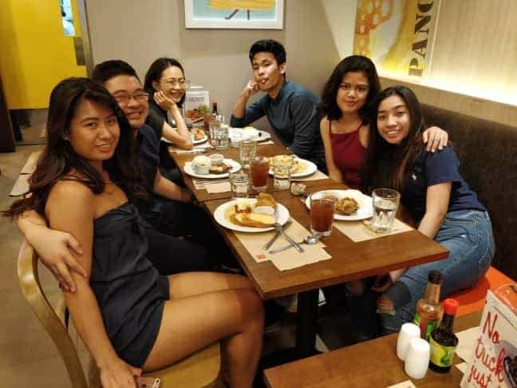

11R Family
To the family who adopted my lonely ass and made my life much better and colourful.
First, I want to thank you for listening to my cries and rants for almost 2 months. Thank you for letting me cry my eyes out and complain until the next door complains from all the noise HAHAHA I'm sorry for that.
To Pops, thank you for giving me all countless of advices, especially when I needed them the most and being straightforward and honest during the entire process. Thank you for cooking me meals at times and thank you for letting me crash at your place whenever I'm bored, or I just feel like it, and during our usual Friday nights. Thank you for all the cuddles even though you complain almost everytime that I'm boney HAHAHA
To Tiffany and Justin, thank you for acting like my mum and dad in Uni. Thank you for always looking after me and for always caring for me. Thank you for understanding my moodswings especially whenever I stress about school and other little things. Thank you for being one of the few I can run to randomly. Thank you for loving me and thank you for the countless of cuddles you share with me. I love you both.
To Jummy, thank you for the comforting silence you share with me whenever I can't find the words to whatever I'm feeling. Thank you for the random hugs, I don't know how but it feels like you just know it whenever I need it. Thank you for letting me crash at your place to finish this website. Thank you for everything. I wuv you.
To Grace, thank you for the cuddles, the laughs and the advices. Thank you for supporting me through my down times and for making me laugh and smile. I don't see you much anymore but I hope you're doing well. I miss you.

